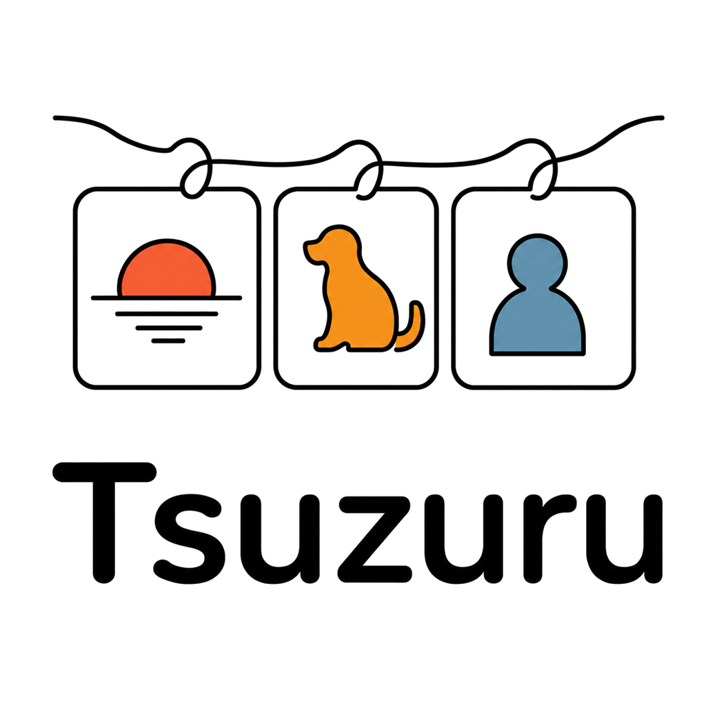

1日1枚だから、続けられる
テーマごとに、その日の1枚を撮影。たくさん残そうと頑張らなくても、日々の変化が自然に積み重なります。

Tsuzuru写真でつづる日常
子ども、家族、ペット、風景、自分自身。大切なものを、テーマごとに1日1枚ずつ残す写真アプリです。
iPhone向けに近日公開予定


A QUIET PHOTO JOURNAL
Tsuzuruが大切にしているのは、数字や反応ではありません。
今日の表情や、少しずつ変わる景色を、あとから気持ちよく振り返れることです。
DESIGNED FOR EVERY DAY
テーマごとに、その日の1枚を撮影。たくさん残そうと頑張らなくても、日々の変化が自然に積み重なります。
SNSへの自動投稿はありません。写真とメモは原則として端末内に保存され、静かに思い出を育てられます。
テーマごとに撮影のお知らせ時刻を設定できます。撮れない日はあとで通知でき、撮れない日があっても責めない設計です。
SEE TSUZURU IN ACTION


TRY PREMIUM
カード登録は不要です。無料体験の終了後に、自動で料金が発生することはありません。